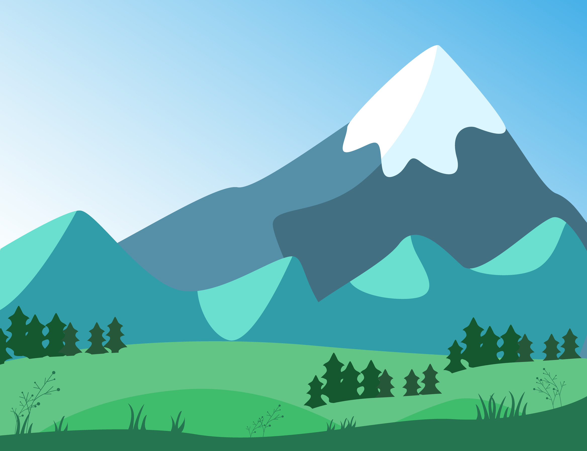
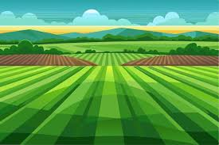
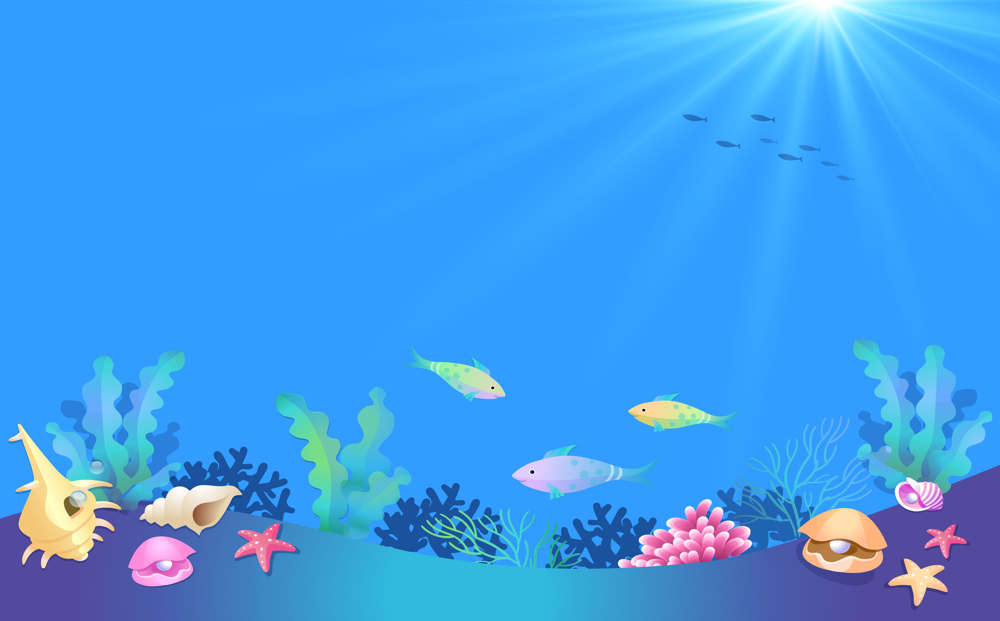

✕
📍 動物園
台北市立動物園
新竹市立動物園
六福村野生動物王國
九九峰動物樂園
頑皮世界野生動物園
壽山動物園
🌊 水族館
潮境智能海洋館（基隆）
野柳海洋世界（新北）
XPark水生公園（桃園）
台中海洋生態館
國立海洋生物博物館（屏東）
小琉球海洋館（屏東）
遠雄海洋公園（花蓮）
澎湖水族館
🏞️ 國家公園
玉山
陽明山
太魯閣
雪霸
金門
東沙環礁
台江
澎湖南方四島
missions
☰
ZooDex 城市動物探索
現在位置：台北創新實驗室
🔍 點我開啟全部圖鑑

山區

平原

海洋
📸